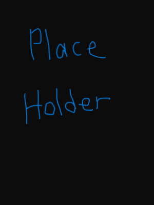

Kalmia Gardens offers beautiful sights on the many hikes and paths throughout the park.Ruth's Drive In is a great place to stop by for some burgers, frys, and a shake!Prestwood Lake is at the center of Hartsville and its a great place for a picnic or some fishing.Downtown Hartsville has many historic buildings as well as plenty of food and shops.Nepture Island Waterpark is the best place to visit during the summer season to cool off!